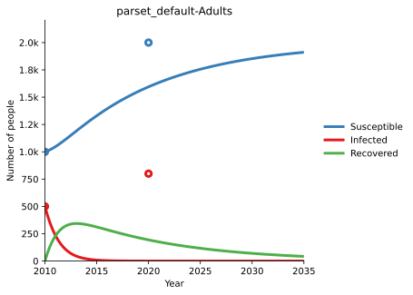
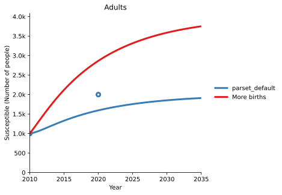
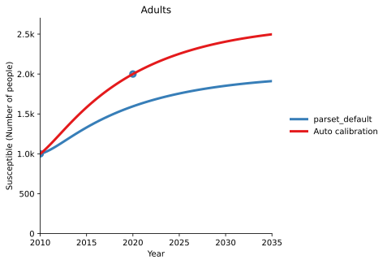
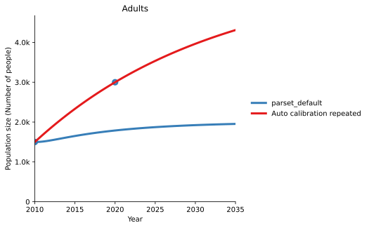
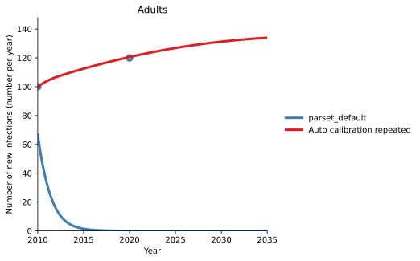
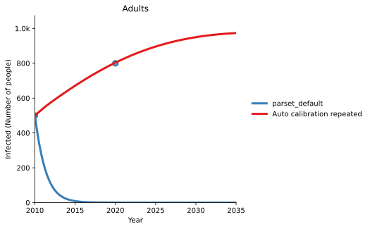
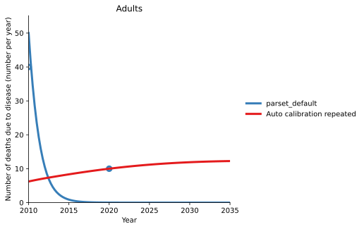

T2 - Calibration¶
Models are simplifications of the real world, and quantities in the model (like the force of infection) represent the aggregation of many different factors. As a result, there can be uncertainty as to what value of the parameters most accurately reflects the real world - for instance, the population force of infection varies with the average number of contacts per person per day, but this quantity may not be well constrained. The first step in running a model is to improve estimates of the parameter values for a particular setting, using data from that setting. Typically, the model is started off at some point in the past (e.g. 2000), such that the initial compartment sizes correspond to the data in the simulation start year. The model is then run up to the current year, with the compartment sizes changing due to the model parameters. The model predictions can then be compared to the actual data for those same years. This allows model parameters to be adjusted to best match the existing data. These same parameters are then used for future projections.
To see calibration in effect, consider the following simple example:
[1]:
import atomica as at
P = at.Project(framework='assets/T2/t2_framework_1.xlsx',databook='assets/T2/t2_databook_1.xlsx', do_run=False)
/opt/hostedtoolcache/Python/3.7.9/x64/lib/python3.7/site-packages/traitlets-5.0.4-py3.7.egg/traitlets/traitlets.py:2945: FutureWarning: --rc={'figure.dpi': 96} for dict-traits is deprecated in traitlets 5.0. You can pass --rc <key=value> ... multiple times to add items to a dict.
FutureWarning,
First, we inspect the default calibration by running the model and plotting it along with the data. To plot the data, pass the project’s data to the plotting function (in this case, plot_series) - this will automatically add scatter points to the plot based on the data in the databook.
[2]:
result = P.run_sim()
d = at.PlotData(result,project=P)
at.plot_series(d, data=P.data);
Elapsed time for running "default": 0.0106s

Notice how the number of susceptible people and infected people exactly match the data points in the simulation start year - as noted above, this is because the model is initialized from the data values in that year. There are some conditions under which the model won’t exactly match the data in the initial year, such as if the initialization characteristics are overdetermined, but these situations are rare.
We can see, however, that the model does not predict enough susceptible people in 2020. There could be many reasons for this, and determining what parts of the model should be changed can often be something of an art. It typically reflects your understanding of the assumptions that were made in designing the framework, and also uncertainties and bias present in the input data. For example, the methodology used to gather data used for the calibration might provide hints as to which parameters to change first.
In this case, as there are insufficient people, it might be the case that the birth rate was too low. There are two ways to address this
You could go back to the databook and enter a larger value for the birth rate
You can add a ‘scale factor’ to the parameter set, which scales the parameter value up or down
Either approach can be used and would provide equivalent results. Why would we prefer one over the other?
An example of a suitable parameter for databook calibration is relative seasonality of mosquito population size - no hard data can exist, but it might be possible to calculate proxy values from other data such as rainfall patterns in different years, adjust annual values manually to match historical epidemic patterns, and then assume a median value for future years. Having this assumption in the databook allows for those calculations to be used as a starting point in the databook before
manually editing, and allows for comparability with other projects that use the same parameter.
Suggestion: When designing a databook, it is recommended that all parameters intended for explicit databook calibration are placed on a single ‘Calibration’ sheet to provide clarity about what is data and what are calibrated assumptions.
An example of a suitable parameter for scale factor calibration is treatment initiation used to determine model transitions from diagnosed to treated - a country has reported data for the number of people initiating treatment, and it is important to accurately maintain the official numbers in the databook. Nevertheless, there may be systematic under-reporting by an unknown degree and we want to account for those additional treatments in the model to ensure outcomes are representative, so it
is appropriate to adjust the scale factor.
An example of a parameter that could be adjusted in either way depending on the circumstances or just personal preferencec would be force of infection - this is a clear calibration parameter that is not based on data, and could be adjusted in a databook if it’s necessary to reflect changing circumstances external to the model over time, calibrated automatically with a scale factor via the calibrate function below in order to achieve the best fit to data, or even a mixture of the two
methods.
The web interfaces (such as the Cascade Analysis Tool) perform calibration using scale factors. The scale factors shown on the website correspond to the values being set here.
To set a scale factor, create a ParameterSet either by copying an existing one, or creating a new one. Then, access the pars attribute to look up the parameter you wish to change, and set the y_factor for the population you want to change:
[3]:
p2 = P.parsets[0].copy()
p2.pars['b_rate'].y_factor['adults'] = 2
The example above doubled the birth rate. Now we can run the model again, and see how the results have changed. Notice how the PlotData command is being called with both the original results object, and the new results object, allowing both model runs to be shown on the same plot.
[4]:
r2 = P.run_sim(parset=p2,result_name = 'More births')
d = at.PlotData([result,r2], outputs='sus',project=P)
at.plot_series(d,axis='results',data=P.data);
Elapsed time for running "default": 0.0124s

We can see that we have considerably overshot the data, indicating that doubling the birth rate was much too big a change. This would typically be the first step in an iterative process, where you adjust the scale factor, inspect the data, and then make further adjustments.
Automated calibration is also available via the project’s calibrate method. This will automatically adjust parameter values to match the data. To use this function, you need to specify which parameters to set scale factors for, and which variables in the databook to compute calibration quality from. The framework can provide defaults for which parameters to automatically calibrate, or you can pass a list of those parameters in directly. In this example, we will pass in b_rate because we
want to adjust the birth rate, and we will use sus as a measurable since we want to match the number of susceptible people. The configuration therefore corresponds to the example shown above.
[5]:
p3 = P.calibrate(max_time=10, parset='default', adjustables=['b_rate'], measurables=['sus']);
Elapsed time for running "default": 0.00764s
Elapsed time for running "default": 0.00683s
step 1 (0.0 s) ++ (orig: 0.20252 | best:0.20252 | new:0.13898 | diff:-0.063540)
Elapsed time for running "default": 0.00699s
step 2 (0.0 s) ++ (orig: 0.20252 | best:0.13898 | new:0.043664 | diff:-0.095321)
Elapsed time for running "default": 0.00727s
step 3 (0.0 s) -- (orig: 0.20252 | best:0.043664 | new:0.099338 | diff:0.055675)
Elapsed time for running "default": 0.00679s
step 4 (0.0 s) -- (orig: 0.20252 | best:0.043664 | new:0.10721 | diff:0.063549)
Elapsed time for running "default": 0.00717s
step 5 (0.0 s) ++ (orig: 0.20252 | best:0.043664 | new:0.027834 | diff:-0.015829)
Elapsed time for running "default": 0.00704s
step 6 (0.1 s) -- (orig: 0.20252 | best:0.027834 | new:0.13509 | diff:0.10726)
Elapsed time for running "default": 0.00724s
step 7 (0.1 s) -- (orig: 0.20252 | best:0.027834 | new:0.081462 | diff:0.053627)
Elapsed time for running "default": 0.00712s
step 8 (0.1 s) -- (orig: 0.20252 | best:0.027834 | new:0.054648 | diff:0.026813)
Elapsed time for running "default": 0.00722s
step 9 (0.1 s) -- (orig: 0.20252 | best:0.027834 | new:0.041241 | diff:0.013407)
Elapsed time for running "default": 0.00692s
step 10 (0.1 s) -- (orig: 0.20252 | best:0.027834 | new:0.034538 | diff:0.0067032)
Elapsed time for running "default": 0.00726s
step 11 (0.1 s) ++ (orig: 0.20252 | best:0.027834 | new:0.0039432 | diff:-0.023891)
Elapsed time for running "default": 0.00724s
step 12 (0.1 s) -- (orig: 0.20252 | best:0.0039432 | new:0.051607 | diff:0.047664)
Elapsed time for running "default": 0.00718s
step 13 (0.1 s) -- (orig: 0.20252 | best:0.0039432 | new:0.027776 | diff:0.023832)
Elapsed time for running "default": 0.00703s
step 14 (0.1 s) -- (orig: 0.20252 | best:0.0039432 | new:0.015860 | diff:0.011916)
Elapsed time for running "default": 0.00722s
step 15 (0.1 s) ++ (orig: 0.20252 | best:0.0039432 | new:0.00059175 | diff:-0.0033515)
Elapsed time for running "default": 0.00684s
step 16 (0.2 s) -- (orig: 0.20252 | best:0.00059175 | new:0.0065499 | diff:0.0059582)
Elapsed time for running "default": 0.00669s
step 17 (0.2 s) -- (orig: 0.20252 | best:0.00059175 | new:0.0044355 | diff:0.0038438)
Elapsed time for running "default": 0.00729s
step 18 (0.2 s) -- (orig: 0.20252 | best:0.00059175 | new:0.0035709 | diff:0.0029791)
Elapsed time for running "default": 0.00676s
step 19 (0.2 s) -- (orig: 0.20252 | best:0.00059175 | new:0.0020813 | diff:0.0014896)
Elapsed time for running "default": 0.00712s
step 20 (0.2 s) -- (orig: 0.20252 | best:0.00059175 | new:0.0019219 | diff:0.0013301)
Elapsed time for running "default": 0.00715s
step 21 (0.2 s) -- (orig: 0.20252 | best:0.00059175 | new:0.00066507 | diff:0.000073320)
Elapsed time for running "default": 0.00842s
step 22 (0.2 s) ++ (orig: 0.20252 | best:0.00059175 | new:0.000036660 | diff:-0.00055509)
Elapsed time for running "default": 0.00852s
step 23 (0.2 s) -- (orig: 0.20252 | best:0.000036660 | new:0.00097927 | diff:0.00094261)
Elapsed time for running "default": 0.00806s
step 24 (0.2 s) -- (orig: 0.20252 | best:0.000036660 | new:0.00050796 | diff:0.00047130)
Elapsed time for running "default": 0.00685s
step 25 (0.2 s) -- (orig: 0.20252 | best:0.000036660 | new:0.00070812 | diff:0.00067146)
Elapsed time for running "default": 0.00818s
step 26 (0.3 s) -- (orig: 0.20252 | best:0.000036660 | new:0.00033573 | diff:0.00029907)
Elapsed time for running "default": 0.00863s
step 27 (0.3 s) -- (orig: 0.20252 | best:0.000036660 | new:0.00014953 | diff:0.00011287)
Elapsed time for running "default": 0.00832s
step 28 (0.3 s) -- (orig: 0.20252 | best:0.000036660 | new:0.00027231 | diff:0.00023565)
Elapsed time for running "default": 0.00836s
step 29 (0.3 s) -- (orig: 0.20252 | best:0.000036660 | new:0.00015449 | diff:0.00011783)
Elapsed time for running "default": 0.00879s
step 30 (0.3 s) -- (orig: 0.20252 | best:0.000036660 | new:0.000095573 | diff:0.000058913)
Elapsed time for running "default": 0.00676s
step 31 (0.3 s) -- (orig: 0.20252 | best:0.000036660 | new:0.000056437 | diff:0.000019778)
Elapsed time for running "default": 0.00702s
step 32 (0.3 s) ++ (orig: 0.20252 | best:0.000036660 | new:0.0000098888 | diff:-0.000026771)
Elapsed time for running "default": 0.00783s
step 33 (0.3 s) -- (orig: 0.20252 | best:0.0000098888 | new:0.000079712 | diff:0.000069823)
Elapsed time for running "default": 0.00714s
step 34 (0.3 s) -- (orig: 0.20252 | best:0.0000098888 | new:0.000019568 | diff:0.0000096789)
Elapsed time for running "default": 0.00698s
step 35 (0.3 s) ++ (orig: 0.20252 | best:0.0000098888 | new:0.0000048394 | diff:-0.0000050494)
Elapsed time for running "default": 0.0135s
step 36 (0.4 s) -- (orig: 0.20252 | best:0.0000048394 | new:0.000026932 | diff:0.000022092)
Elapsed time for running "default": 0.00892s
step 37 (0.4 s) -- (orig: 0.20252 | best:0.0000048394 | new:0.000030072 | diff:0.000025233)
Elapsed time for running "default": 0.00702s
step 38 (0.4 s) -- (orig: 0.20252 | best:0.0000048394 | new:0.000015886 | diff:0.000011046)
Elapsed time for running "default": 0.00715s
step 39 (0.4 s) -- (orig: 0.20252 | best:0.0000048394 | new:0.000012616 | diff:0.0000077769)
Elapsed time for running "default": 0.00716s
step 40 (0.4 s) -- (orig: 0.20252 | best:0.0000048394 | new:0.000010363 | diff:0.0000055231)
Elapsed time for running "default": 0.00698s
step 41 (0.4 s) ++ (orig: 0.20252 | best:0.0000048394 | new:0.0000038884 | diff:-0.00000095101)
Elapsed time for running "default": 0.00773s
step 42 (0.4 s) -- (orig: 0.20252 | best:0.0000038884 | new:0.000016980 | diff:0.000013092)
=== Absolute improvement too small (0.00000060004 < 0.0000010000) (42 steps, orig: 0.20252 | best: 0 | ratio: 0) ===
The result of automated calibration is another ParameterSet. We can inspect the scale factor that the algorithm found:
[6]:
p3.pars['b_rate'].y_factor
#0: "adults": 1.3186984062194826
[6]:
and we can run the model to compare the automated calibration to the original default calibration:
[7]:
r3 = P.run_sim(parset=p3,result_name = 'Auto calibration')
d = at.PlotData([result,r3], outputs='sus',project=P)
at.plot_series(d,axis='results',data=P.data);
Elapsed time for running "default": 0.0109s

Calibration tips¶
While calibrations can vary significantly from model-to-model, some general tips are
Match coarse-grained quantities first, followed by fine-grained quantities. For example, for TB you might calibrate it in the following order:
Match population size (adjusting birth rate and death rate)
Match disease prevalance (adjusting force of infection)
Match drug-resistant/drug-susceptible split (adjusting proportion of infections that are drug-resistant)
For complex models when considering how to proceed with a calibration, it can help to start with mapping the expected relationships between key input parameters that will be used for calibration and key output parameters for which data exists and that should be matched by the calibration, in terms of how changes might flow throughout the model.

From the diagram above, it can be seen that as is typically the case, population size (alive) has a large impact on everything else, but the number of disease-related deaths have only a minor impact on population size in return, so population size needs to be matched first. Incidence (inci) and prevalence (inf) have a strong cyclical relationship should be considered together, but force of infection and recovery rate have direct links to modifying each of those individually through
changing the rate at which people are infected and changing the rate at which people recover. Disease-related deaths (m_num) can be considered last if it is not already closely matched from calibrating to prevalence. Because this may adjust the population size, an iterative cycle of calibration may be appropriate to get the best overall fit.
A calibration might then proceed in the following order with three repeats:
[8]:
cal_par = P.parsets['default'].copy()
for _ in range(3):
cal_par = P.calibrate(max_time=10, parset=cal_par, adjustables=['b_rate', 'doth_rate'], measurables=['alive'])
cal_par = P.calibrate(max_time=10, parset=cal_par, adjustables=['foi', 'rec_rate'], measurables=['inci', 'inf'])
cal_par = P.calibrate(max_time=10, parset=cal_par, adjustables=['m_rate'], measurables=['m_num'])
Elapsed time for running "default": 0.00769s
Elapsed time for running "default": 0.00748s
step 1 (0.0 s) ++ (orig: 0.40380 | best:0.40380 | new:0.36136 | diff:-0.042440)
Elapsed time for running "default": 0.00677s
step 2 (0.0 s) ++ (orig: 0.40380 | best:0.36136 | new:0.32288 | diff:-0.038481)
Elapsed time for running "default": 0.00703s
step 3 (0.0 s) ++ (orig: 0.40380 | best:0.32288 | new:0.25914 | diff:-0.063746)
Elapsed time for running "default": 0.00642s
step 4 (0.0 s) -- (orig: 0.40380 | best:0.25914 | new:0.30247 | diff:0.043335)
Elapsed time for running "default": 0.00679s
step 5 (0.0 s) -- (orig: 0.40380 | best:0.25914 | new:0.30632 | diff:0.047184)
Elapsed time for running "default": 0.00700s
step 6 (0.1 s) ++ (orig: 0.40380 | best:0.25914 | new:0.18836 | diff:-0.070777)
Elapsed time for running "default": 0.00666s
step 7 (0.1 s) ++ (orig: 0.40380 | best:0.18836 | new:0.069807 | diff:-0.11855)
Elapsed time for running "default": 0.00696s
step 8 (0.1 s) -- (orig: 0.40380 | best:0.069807 | new:0.15316 | diff:0.083350)
Elapsed time for running "default": 0.00718s
step 9 (0.1 s) ++ (orig: 0.40380 | best:0.069807 | new:0.034125 | diff:-0.035682)
Elapsed time for running "default": 0.00695s
step 10 (0.1 s) -- (orig: 0.40380 | best:0.034125 | new:0.21905 | diff:0.18493)
Elapsed time for running "default": 0.00719s
step 11 (0.1 s) -- (orig: 0.40380 | best:0.034125 | new:0.16074 | diff:0.12662)
Elapsed time for running "default": 0.00726s
step 12 (0.1 s) -- (orig: 0.40380 | best:0.034125 | new:0.12186 | diff:0.087736)
Elapsed time for running "default": 0.00728s
step 13 (0.1 s) -- (orig: 0.40380 | best:0.034125 | new:0.076874 | diff:0.042749)
Elapsed time for running "default": 0.00660s
step 14 (0.1 s) -- (orig: 0.40380 | best:0.034125 | new:0.055227 | diff:0.021102)
Elapsed time for running "default": 0.00722s
step 15 (0.1 s) ++ (orig: 0.40380 | best:0.034125 | new:0.0018531 | diff:-0.032272)
Elapsed time for running "default": 0.00693s
step 16 (0.1 s) -- (orig: 0.40380 | best:0.0018531 | new:0.044194 | diff:0.042341)
Elapsed time for running "default": 0.00710s
step 17 (0.2 s) -- (orig: 0.40380 | best:0.0018531 | new:0.063723 | diff:0.061870)
Elapsed time for running "default": 0.00749s
step 18 (0.2 s) -- (orig: 0.40380 | best:0.0018531 | new:0.032788 | diff:0.030935)
Elapsed time for running "default": 0.00698s
step 19 (0.2 s) -- (orig: 0.40380 | best:0.0018531 | new:0.011924 | diff:0.010071)
Elapsed time for running "default": 0.00728s
step 20 (0.2 s) -- (orig: 0.40380 | best:0.0018531 | new:0.021516 | diff:0.019663)
Elapsed time for running "default": 0.00722s
step 21 (0.2 s) -- (orig: 0.40380 | best:0.0018531 | new:0.0099190 | diff:0.0080658)
Elapsed time for running "default": 0.00843s
step 22 (0.2 s) -- (orig: 0.40380 | best:0.0018531 | new:0.025644 | diff:0.023791)
Elapsed time for running "default": 0.00876s
step 23 (0.2 s) -- (orig: 0.40380 | best:0.0018531 | new:0.0068728 | diff:0.0050197)
Elapsed time for running "default": 0.00884s
step 24 (0.2 s) -- (orig: 0.40380 | best:0.0018531 | new:0.017320 | diff:0.015467)
Elapsed time for running "default": 0.00716s
step 25 (0.2 s) -- (orig: 0.40380 | best:0.0018531 | new:0.0043590 | diff:0.0025059)
Elapsed time for running "default": 0.00864s
step 26 (0.2 s) -- (orig: 0.40380 | best:0.0018531 | new:0.0040550 | diff:0.0022019)
Elapsed time for running "default": 0.00861s
step 27 (0.3 s) -- (orig: 0.40380 | best:0.0018531 | new:0.011896 | diff:0.010042)
Elapsed time for running "default": 0.00811s
step 28 (0.3 s) -- (orig: 0.40380 | best:0.0018531 | new:0.0095868 | diff:0.0077336)
Elapsed time for running "default": 0.00808s
step 29 (0.3 s) -- (orig: 0.40380 | best:0.0018531 | new:0.0031051 | diff:0.0012519)
Elapsed time for running "default": 0.00857s
step 30 (0.3 s) -- (orig: 0.40380 | best:0.0018531 | new:0.0050212 | diff:0.0031680)
Elapsed time for running "default": 0.00698s
step 31 (0.3 s) -- (orig: 0.40380 | best:0.0018531 | new:0.0057200 | diff:0.0038668)
Elapsed time for running "default": 0.00673s
step 32 (0.3 s) ++ (orig: 0.40380 | best:0.0018531 | new:0.0011065 | diff:-0.00074666)
Elapsed time for running "default": 0.00782s
step 33 (0.3 s) -- (orig: 0.40380 | best:0.0011065 | new:0.0055252 | diff:0.0044187)
Elapsed time for running "default": 0.00671s
step 34 (0.3 s) ++ (orig: 0.40380 | best:0.0011065 | new:0.00048312 | diff:-0.00062337)
Elapsed time for running "default": 0.00715s
step 35 (0.3 s) -- (orig: 0.40380 | best:0.00048312 | new:0.0014470 | diff:0.00096390)
Elapsed time for running "default": 0.00724s
step 36 (0.3 s) -- (orig: 0.40380 | best:0.00048312 | new:0.0026973 | diff:0.0022142)
Elapsed time for running "default": 0.00682s
step 37 (0.4 s) -- (orig: 0.40380 | best:0.00048312 | new:0.0015910 | diff:0.0011079)
Elapsed time for running "default": 0.00700s
step 38 (0.4 s) ++ (orig: 0.40380 | best:0.00048312 | new:0.00048195 | diff:-0.0000011643)
Elapsed time for running "default": 0.00710s
step 39 (0.4 s) -- (orig: 0.40380 | best:0.00048195 | new:0.0019296 | diff:0.0014476)
Elapsed time for running "default": 0.00705s
step 40 (0.4 s) -- (orig: 0.40380 | best:0.00048195 | new:0.0012058 | diff:0.00072380)
Elapsed time for running "default": 0.00680s
step 41 (0.4 s) -- (orig: 0.40380 | best:0.00048195 | new:0.0029494 | diff:0.0024675)
Elapsed time for running "default": 0.00704s
step 42 (0.4 s) ++ (orig: 0.40380 | best:0.00048195 | new:0.000072570 | diff:-0.00040938)
Elapsed time for running "default": 0.00861s
step 43 (0.4 s) -- (orig: 0.40380 | best:0.000072570 | new:0.0017876 | diff:0.0017150)
Elapsed time for running "default": 0.00791s
step 44 (0.4 s) -- (orig: 0.40380 | best:0.000072570 | new:0.00086341 | diff:0.00079084)
Elapsed time for running "default": 0.00791s
step 45 (0.4 s) -- (orig: 0.40380 | best:0.000072570 | new:0.00039528 | diff:0.00032271)
Elapsed time for running "default": 0.00838s
step 46 (0.4 s) -- (orig: 0.40380 | best:0.000072570 | new:0.00090362 | diff:0.00083105)
Elapsed time for running "default": 0.00846s
step 47 (0.5 s) -- (orig: 0.40380 | best:0.000072570 | new:0.00016132 | diff:0.000088751)
Elapsed time for running "default": 0.00808s
step 48 (0.5 s) -- (orig: 0.40380 | best:0.000072570 | new:0.00028919 | diff:0.00021662)
Elapsed time for running "default": 0.00842s
step 49 (0.5 s) -- (orig: 0.40380 | best:0.000072570 | new:0.00093006 | diff:0.00085749)
Elapsed time for running "default": 0.00818s
step 50 (0.5 s) -- (orig: 0.40380 | best:0.000072570 | new:0.00048821 | diff:0.00041564)
Elapsed time for running "default": 0.00851s
step 51 (0.5 s) -- (orig: 0.40380 | best:0.000072570 | new:0.00050132 | diff:0.00042875)
Elapsed time for running "default": 0.00708s
step 52 (0.5 s) -- (orig: 0.40380 | best:0.000072570 | new:0.00010831 | diff:0.000035738)
Elapsed time for running "default": 0.00672s
step 53 (0.5 s) -- (orig: 0.40380 | best:0.000072570 | new:0.00028042 | diff:0.00020785)
Elapsed time for running "default": 0.00704s
step 54 (0.5 s) -- (orig: 0.40380 | best:0.000072570 | new:0.00017650 | diff:0.00010393)
Elapsed time for running "default": 0.00694s
step 55 (0.5 s) ++ (orig: 0.40380 | best:0.000072570 | new:0.000044367 | diff:-0.000028203)
Elapsed time for running "default": 0.00666s
step 56 (0.6 s) -- (orig: 0.40380 | best:0.000044367 | new:0.00021981 | diff:0.00017544)
Elapsed time for running "default": 0.00729s
step 57 (0.6 s) -- (orig: 0.40380 | best:0.000044367 | new:0.00017002 | diff:0.00012566)
Elapsed time for running "default": 0.00708s
step 58 (0.6 s) -- (orig: 0.40380 | best:0.000044367 | new:0.00013208 | diff:0.000087714)
Elapsed time for running "default": 0.00704s
step 59 (0.6 s) -- (orig: 0.40380 | best:0.000044367 | new:0.000088223 | diff:0.000043856)
Elapsed time for running "default": 0.00728s
step 60 (0.6 s) -- (orig: 0.40380 | best:0.000044367 | new:0.00013481 | diff:0.000090446)
Elapsed time for running "default": 0.00734s
step 61 (0.6 s) -- (orig: 0.40380 | best:0.000044367 | new:0.000066295 | diff:0.000021928)
Elapsed time for running "default": 0.00705s
step 62 (0.6 s) -- (orig: 0.40380 | best:0.000044367 | new:0.000055331 | diff:0.000010964)
Elapsed time for running "default": 0.00854s
step 63 (0.6 s) ++ (orig: 0.40380 | best:0.000044367 | new:0.0000076072 | diff:-0.000036760)
Elapsed time for running "default": 0.00663s
step 64 (0.6 s) -- (orig: 0.40380 | best:0.0000076072 | new:0.00011480 | diff:0.00010719)
Elapsed time for running "default": 0.00827s
step 65 (0.6 s) ++ (orig: 0.40380 | best:0.0000076072 | new:0.0000021257 | diff:-0.0000054815)
Elapsed time for running "default": 0.00855s
step 66 (0.6 s) -- (orig: 0.40380 | best:0.0000021257 | new:0.000080081 | diff:0.000077955)
Elapsed time for running "default": 0.00673s
step 67 (0.7 s) -- (orig: 0.40380 | best:0.0000021257 | new:0.000043096 | diff:0.000040970)
Elapsed time for running "default": 0.00850s
step 68 (0.7 s) -- (orig: 0.40380 | best:0.0000021257 | new:0.0000060966 | diff:0.0000039709)
Elapsed time for running "default": 0.00770s
step 69 (0.7 s) -- (orig: 0.40380 | best:0.0000021257 | new:0.000041104 | diff:0.000038979)
Elapsed time for running "default": 0.00734s
step 70 (0.7 s) -- (orig: 0.40380 | best:0.0000021257 | new:0.000021615 | diff:0.000019490)
Elapsed time for running "default": 0.00701s
step 71 (0.7 s) -- (orig: 0.40380 | best:0.0000021257 | new:0.000020485 | diff:0.000018359)
Elapsed time for running "default": 0.00759s
step 72 (0.7 s) -- (orig: 0.40380 | best:0.0000021257 | new:0.000055722 | diff:0.000053596)
Elapsed time for running "default": 0.00691s
step 73 (0.7 s) ++ (orig: 0.40380 | best:0.0000021257 | new:0.0000019855 | diff:-0.00000014023)
Elapsed time for running "default": 0.00700s
step 74 (0.7 s) -- (orig: 0.40380 | best:0.0000019855 | new:0.0000081522 | diff:0.0000061668)
Elapsed time for running "default": 0.00740s
step 75 (0.7 s) -- (orig: 0.40380 | best:0.0000019855 | new:0.000024813 | diff:0.000022827)
Elapsed time for running "default": 0.00719s
step 76 (0.8 s) -- (orig: 0.40380 | best:0.0000019855 | new:0.000011414 | diff:0.0000094282)
Elapsed time for running "default": 0.00718s
step 77 (0.8 s) -- (orig: 0.40380 | best:0.0000019855 | new:0.0000077594 | diff:0.0000057740)
Elapsed time for running "default": 0.00868s
step 78 (0.8 s) -- (orig: 0.40380 | best:0.0000019855 | new:0.000013291 | diff:0.000011305)
Elapsed time for running "default": 0.00840s
step 79 (0.8 s) -- (orig: 0.40380 | best:0.0000019855 | new:0.0000076382 | diff:0.0000056527)
Elapsed time for running "default": 0.00852s
step 80 (0.8 s) -- (orig: 0.40380 | best:0.0000019855 | new:0.0000028870 | diff:0.00000090155)
Elapsed time for running "default": 0.0102s
step 81 (0.8 s) -- (orig: 0.40380 | best:0.0000019855 | new:0.0000047141 | diff:0.0000027286)
Elapsed time for running "default": 0.00735s
step 82 (0.8 s) ++ (orig: 0.40380 | best:0.0000019855 | new:0.00000045078 | diff:-0.0000015347)
Elapsed time for running "default": 0.00677s
step 83 (0.8 s) -- (orig: 0.40380 | best:0.00000045078 | new:0.0000026326 | diff:0.0000021818)
=== Absolute improvement too small (0.00000035782 < 0.0000010000) (83 steps, orig: 0.40380 | best: 0 | ratio: 0) ===
Elapsed time for running "default": 0.00949s
Elapsed time for running "default": 0.00719s
step 1 (0.0 s) -- (orig: 2.3325 | best:2.3325 | new:2.3330 | diff:0.00049766)
Elapsed time for running "default": 0.00680s
step 2 (0.0 s) ++ (orig: 2.3325 | best:2.3325 | new:2.3313 | diff:-0.0011092)
Elapsed time for running "default": 0.00834s
step 3 (0.0 s) ++ (orig: 2.3325 | best:2.3313 | new:2.3268 | diff:-0.0045562)
Elapsed time for running "default": 0.00730s
step 4 (0.0 s) ++ (orig: 2.3325 | best:2.3268 | new:2.2969 | diff:-0.029876)
Elapsed time for running "default": 0.00685s
step 5 (0.0 s) ++ (orig: 2.3325 | best:2.2969 | new:1.9265 | diff:-0.37038)
Elapsed time for running "default": 0.00902s
step 6 (0.1 s) ++ (orig: 2.3325 | best:1.9265 | new:0.92836 | diff:-0.99818)
Elapsed time for running "default": 0.00710s
step 7 (0.1 s) ++ (orig: 2.3325 | best:0.92836 | new:0.63944 | diff:-0.28892)
Elapsed time for running "default": 0.00679s
step 8 (0.1 s) ++ (orig: 2.3325 | best:0.63944 | new:0.34460 | diff:-0.29484)
Elapsed time for running "default": 0.00706s
step 9 (0.1 s) -- (orig: 2.3325 | best:0.34460 | new:0.69663 | diff:0.35203)
Elapsed time for running "default": 0.00698s
step 10 (0.1 s) -- (orig: 2.3325 | best:0.34460 | new:0.52075 | diff:0.17615)
Elapsed time for running "default": 0.00675s
step 11 (0.1 s) -- (orig: 2.3325 | best:0.34460 | new:0.49108 | diff:0.14648)
Elapsed time for running "default": 0.00854s
step 12 (0.1 s) ++ (orig: 2.3325 | best:0.34460 | new:0.33498 | diff:-0.0096231)
Elapsed time for running "default": 0.00886s
step 13 (0.1 s) -- (orig: 2.3325 | best:0.33498 | new:0.65088 | diff:0.31591)
Elapsed time for running "default": 0.00819s
step 14 (0.1 s) -- (orig: 2.3325 | best:0.33498 | new:0.47524 | diff:0.14026)
Elapsed time for running "default": 0.0104s
step 15 (0.2 s) -- (orig: 2.3325 | best:0.33498 | new:0.40570 | diff:0.070719)
Elapsed time for running "default": 0.00871s
step 16 (0.2 s) -- (orig: 2.3325 | best:0.33498 | new:0.37046 | diff:0.035482)
Elapsed time for running "default": 0.00860s
step 17 (0.2 s) ++ (orig: 2.3325 | best:0.33498 | new:0.32475 | diff:-0.010229)
Elapsed time for running "default": 0.00872s
step 18 (0.2 s) -- (orig: 2.3325 | best:0.32475 | new:0.33498 | diff:0.010229)
Elapsed time for running "default": 0.00849s
step 19 (0.2 s) -- (orig: 2.3325 | best:0.32475 | new:0.33498 | diff:0.010229)
Elapsed time for running "default": 0.00861s
step 20 (0.2 s) -- (orig: 2.3325 | best:0.32475 | new:0.33498 | diff:0.010229)
Elapsed time for running "default": 0.00947s
step 21 (0.2 s) -- (orig: 2.3325 | best:0.32475 | new:0.33498 | diff:0.010229)
Elapsed time for running "default": 0.00860s
step 22 (0.2 s) -- (orig: 2.3325 | best:0.32475 | new:0.33056 | diff:0.0058156)
Elapsed time for running "default": 0.00845s
step 23 (0.2 s) -- (orig: 2.3325 | best:0.32475 | new:0.32770 | diff:0.0029572)
Elapsed time for running "default": 0.00898s
step 24 (0.3 s) -- (orig: 2.3325 | best:0.32475 | new:0.33498 | diff:0.010229)
Elapsed time for running "default": 0.00812s
step 25 (0.3 s) -- (orig: 2.3325 | best:0.32475 | new:0.33178 | diff:0.0070345)
Elapsed time for running "default": 0.00813s
step 26 (0.3 s) -- (orig: 2.3325 | best:0.32475 | new:0.51981 | diff:0.19506)
Elapsed time for running "default": 0.00722s
step 27 (0.3 s) ++ (orig: 2.3325 | best:0.32475 | new:0.32346 | diff:-0.0012865)
Elapsed time for running "default": 0.00673s
step 28 (0.3 s) -- (orig: 2.3325 | best:0.32346 | new:0.32766 | diff:0.0042014)
Elapsed time for running "default": 0.00748s
step 29 (0.3 s) ++ (orig: 2.3325 | best:0.32346 | new:0.32148 | diff:-0.0019819)
Elapsed time for running "default": 0.00735s
step 30 (0.3 s) ++ (orig: 2.3325 | best:0.32148 | new:0.31837 | diff:-0.0031092)
Elapsed time for running "default": 0.00813s
step 31 (0.3 s) ++ (orig: 2.3325 | best:0.31837 | new:0.30937 | diff:-0.0089951)
Elapsed time for running "default": 0.00726s
step 32 (0.3 s) -- (orig: 2.3325 | best:0.30937 | new:0.47896 | diff:0.16958)
Elapsed time for running "default": 0.00864s
step 33 (0.4 s) -- (orig: 2.3325 | best:0.30937 | new:0.31100 | diff:0.0016264)
Elapsed time for running "default": 0.00862s
step 34 (0.4 s) ++ (orig: 2.3325 | best:0.30937 | new:0.30457 | diff:-0.0048047)
Elapsed time for running "default": 0.00877s
step 35 (0.4 s) ++ (orig: 2.3325 | best:0.30457 | new:0.29882 | diff:-0.0057476)
Elapsed time for running "default": 0.00984s
step 36 (0.4 s) -- (orig: 2.3325 | best:0.29882 | new:0.30178 | diff:0.0029633)
Elapsed time for running "default": 0.00868s
step 37 (0.4 s) -- (orig: 2.3325 | best:0.29882 | new:0.39170 | diff:0.092879)
Elapsed time for running "default": 0.00879s
step 38 (0.4 s) -- (orig: 2.3325 | best:0.29882 | new:0.34563 | diff:0.046807)
Elapsed time for running "default": 0.00913s
step 39 (0.4 s) -- (orig: 2.3325 | best:0.29882 | new:0.32231 | diff:0.023488)
Elapsed time for running "default": 0.00862s
step 40 (0.4 s) -- (orig: 2.3325 | best:0.29882 | new:0.31058 | diff:0.011764)
Elapsed time for running "default": 0.00894s
step 41 (0.4 s) -- (orig: 2.3325 | best:0.29882 | new:0.30471 | diff:0.0058868)
Elapsed time for running "default": 0.00879s
step 42 (0.5 s) ++ (orig: 2.3325 | best:0.29882 | new:0.29050 | diff:-0.0083173)
Elapsed time for running "default": 0.00860s
step 43 (0.5 s) -- (orig: 2.3325 | best:0.29050 | new:0.29346 | diff:0.0029599)
Elapsed time for running "default": 0.00864s
step 44 (0.5 s) -- (orig: 2.3325 | best:0.29050 | new:0.29198 | diff:0.0014802)
Elapsed time for running "default": 0.00958s
step 45 (0.5 s) -- (orig: 2.3325 | best:0.29050 | new:0.32497 | diff:0.034463)
Elapsed time for running "default": 0.00713s
step 46 (0.5 s) ++ (orig: 2.3325 | best:0.29050 | new:0.28327 | diff:-0.0072302)
Elapsed time for running "default": 0.00713s
step 47 (0.5 s) -- (orig: 2.3325 | best:0.28327 | new:0.28538 | diff:0.0021079)
Elapsed time for running "default": 0.00739s
step 48 (0.5 s) -- (orig: 2.3325 | best:0.28327 | new:0.28401 | diff:0.00074069)
Elapsed time for running "default": 0.00717s
step 49 (0.5 s) -- (orig: 2.3325 | best:0.28327 | new:0.37385 | diff:0.090571)
Elapsed time for running "default": 0.00893s
step 50 (0.5 s) -- (orig: 2.3325 | best:0.28327 | new:0.30007 | diff:0.016795)
Elapsed time for running "default": 0.00740s
step 51 (0.6 s) ++ (orig: 2.3325 | best:0.28327 | new:0.28038 | diff:-0.0028926)
Elapsed time for running "default": 0.00853s
step 52 (0.6 s) -- (orig: 2.3325 | best:0.28038 | new:0.28075 | diff:0.00037023)
Elapsed time for running "default": 0.00849s
step 53 (0.6 s) -- (orig: 2.3325 | best:0.28038 | new:0.31877 | diff:0.038390)
Elapsed time for running "default": 0.00879s
step 54 (0.6 s) -- (orig: 2.3325 | best:0.28038 | new:0.29065 | diff:0.010271)
Elapsed time for running "default": 0.00874s
step 55 (0.6 s) ++ (orig: 2.3325 | best:0.28038 | new:0.27927 | diff:-0.0011074)
Elapsed time for running "default": 0.00870s
step 56 (0.6 s) -- (orig: 2.3325 | best:0.27927 | new:0.28038 | diff:0.0011074)
Elapsed time for running "default": 0.0101s
step 57 (0.6 s) -- (orig: 2.3325 | best:0.27927 | new:0.29772 | diff:0.018445)
Elapsed time for running "default": 0.00887s
step 58 (0.6 s) -- (orig: 2.3325 | best:0.27927 | new:0.27946 | diff:0.00018508)
Elapsed time for running "default": 0.00848s
step 59 (0.6 s) -- (orig: 2.3325 | best:0.27927 | new:0.28711 | diff:0.0078363)
Elapsed time for running "default": 0.00861s
step 60 (0.7 s) -- (orig: 2.3325 | best:0.27927 | new:0.27983 | diff:0.00055522)
Elapsed time for running "default": 0.00852s
step 61 (0.7 s) -- (orig: 2.3325 | best:0.27927 | new:0.28995 | diff:0.010672)
Elapsed time for running "default": 0.00906s
step 62 (0.7 s) -- (orig: 2.3325 | best:0.27927 | new:0.28178 | diff:0.0025113)
Elapsed time for running "default": 0.00865s
step 63 (0.7 s) ++ (orig: 2.3325 | best:0.27927 | new:0.27912 | diff:-0.00015640)
Elapsed time for running "default": 0.00939s
step 64 (0.7 s) -- (orig: 2.3325 | best:0.27912 | new:0.28312 | diff:0.0040002)
Elapsed time for running "default": 0.00871s
step 65 (0.7 s) -- (orig: 2.3325 | best:0.27912 | new:0.27934 | diff:0.00022597)
Elapsed time for running "default": 0.00753s
step 66 (0.7 s) -- (orig: 2.3325 | best:0.27912 | new:0.28480 | diff:0.0056866)
Elapsed time for running "default": 0.00868s
step 67 (0.7 s) -- (orig: 2.3325 | best:0.27912 | new:0.27916 | diff:0.000039966)
Elapsed time for running "default": 0.00904s
step 68 (0.7 s) -- (orig: 2.3325 | best:0.27912 | new:0.28094 | diff:0.0018179)
Elapsed time for running "default": 0.00905s
step 69 (0.8 s) -- (orig: 2.3325 | best:0.27912 | new:0.28112 | diff:0.0020011)
Elapsed time for running "default": 0.00862s
step 70 (0.8 s) -- (orig: 2.3325 | best:0.27912 | new:0.28003 | diff:0.00090892)
Elapsed time for running "default": 0.00867s
step 71 (0.8 s) -- (orig: 2.3325 | best:0.27912 | new:0.27920 | diff:0.000086790)
Elapsed time for running "default": 0.00901s
step 72 (0.8 s) -- (orig: 2.3325 | best:0.27912 | new:0.27957 | diff:0.00045446)
Elapsed time for running "default": 0.00859s
step 73 (0.8 s) -- (orig: 2.3325 | best:0.27912 | new:0.28012 | diff:0.0010008)
Elapsed time for running "default": 0.00879s
step 74 (0.8 s) -- (orig: 2.3325 | best:0.27912 | new:0.27913 | diff:0.000017133)
Elapsed time for running "default": 0.00863s
step 75 (0.8 s) -- (orig: 2.3325 | best:0.27912 | new:0.27934 | diff:0.00022723)
=== Relative improvement too small (0.000028017 < 0.0010000) (75 steps, orig: 2.3325 | best: 0 | ratio: 0) ===
Elapsed time for running "default": 0.00926s
Elapsed time for running "default": 0.00774s
step 1 (0.0 s) ++ (orig: 5.0257 | best:5.0257 | new:4.7147 | diff:-0.31102)
Elapsed time for running "default": 0.00854s
step 2 (0.0 s) ++ (orig: 5.0257 | best:4.7147 | new:4.2502 | diff:-0.46450)
Elapsed time for running "default": 0.00854s
step 3 (0.0 s) -- (orig: 5.0257 | best:4.2502 | new:4.5355 | diff:0.28529)
Elapsed time for running "default": 0.00699s
step 4 (0.0 s) ++ (orig: 5.0257 | best:4.2502 | new:3.6008 | diff:-0.64939)
Elapsed time for running "default": 0.00685s
step 5 (0.1 s) ++ (orig: 5.0257 | best:3.6008 | new:1.6861 | diff:-1.9147)
Elapsed time for running "default": 0.00739s
step 6 (0.1 s) -- (orig: 5.0257 | best:1.6861 | new:2.0000 | diff:0.31392)
Elapsed time for running "default": 0.00872s
step 7 (0.1 s) -- (orig: 5.0257 | best:1.6861 | new:2.0000 | diff:0.31392)
Elapsed time for running "default": 0.00855s
step 8 (0.1 s) ++ (orig: 5.0257 | best:1.6861 | new:1.2433 | diff:-0.44274)
Elapsed time for running "default": 0.00859s
step 9 (0.1 s) -- (orig: 5.0257 | best:1.2433 | new:2.0000 | diff:0.75665)
Elapsed time for running "default": 0.00953s
step 10 (0.1 s) -- (orig: 5.0257 | best:1.2433 | new:2.0000 | diff:0.75665)
Elapsed time for running "default": 0.00848s
step 11 (0.1 s) -- (orig: 5.0257 | best:1.2433 | new:1.8277 | diff:0.58438)
Elapsed time for running "default": 0.00830s
step 12 (0.1 s) ++ (orig: 5.0257 | best:1.2433 | new:1.0587 | diff:-0.18469)
Elapsed time for running "default": 0.00871s
step 13 (0.1 s) ++ (orig: 5.0257 | best:1.0587 | new:0.93443 | diff:-0.12423)
Elapsed time for running "default": 0.00897s
step 14 (0.2 s) -- (orig: 5.0257 | best:0.93443 | new:1.4877 | diff:0.55322)
Elapsed time for running "default": 0.00835s
step 15 (0.2 s) -- (orig: 5.0257 | best:0.93443 | new:1.3555 | diff:0.42105)
Elapsed time for running "default": 0.00921s
step 16 (0.2 s) -- (orig: 5.0257 | best:0.93443 | new:1.1426 | diff:0.20818)
Elapsed time for running "default": 0.00714s
step 17 (0.2 s) -- (orig: 5.0257 | best:0.93443 | new:1.0379 | diff:0.10351)
Elapsed time for running "default": 0.00752s
step 18 (0.2 s) -- (orig: 5.0257 | best:0.93443 | new:0.98604 | diff:0.051611)
Elapsed time for running "default": 0.00725s
step 19 (0.2 s) -- (orig: 5.0257 | best:0.93443 | new:1.1775 | diff:0.24304)
Elapsed time for running "default": 0.00925s
step 20 (0.2 s) -- (orig: 5.0257 | best:0.93443 | new:1.0150 | diff:0.080591)
Elapsed time for running "default": 0.00859s
step 21 (0.2 s) ++ (orig: 5.0257 | best:0.93443 | new:0.93192 | diff:-0.0025089)
Elapsed time for running "default": 0.00729s
step 22 (0.2 s) -- (orig: 5.0257 | best:0.93192 | new:1.0561 | diff:0.12418)
Elapsed time for running "default": 0.00897s
step 23 (0.3 s) -- (orig: 5.0257 | best:0.93192 | new:0.99436 | diff:0.062443)
Elapsed time for running "default": 0.00980s
step 24 (0.3 s) -- (orig: 5.0257 | best:0.93192 | new:0.96323 | diff:0.031310)
Elapsed time for running "default": 0.0103s
step 25 (0.3 s) ++ (orig: 5.0257 | best:0.93192 | new:0.91201 | diff:-0.019905)
Elapsed time for running "default": 0.0101s
step 26 (0.3 s) ++ (orig: 5.0257 | best:0.91201 | new:0.89043 | diff:-0.021587)
Elapsed time for running "default": 0.00939s
step 27 (0.3 s) -- (orig: 5.0257 | best:0.89043 | new:0.94823 | diff:0.057805)
Elapsed time for running "default": 0.0102s
step 28 (0.3 s) -- (orig: 5.0257 | best:0.89043 | new:0.91928 | diff:0.028857)
Elapsed time for running "default": 0.00746s
step 29 (0.3 s) -- (orig: 5.0257 | best:0.89043 | new:0.90484 | diff:0.014417)
Elapsed time for running "default": 0.00762s
step 30 (0.3 s) -- (orig: 5.0257 | best:0.89043 | new:0.89763 | diff:0.0072057)
Elapsed time for running "default": 0.00909s
step 31 (0.4 s) -- (orig: 5.0257 | best:0.89043 | new:0.89784 | diff:0.0074132)
Elapsed time for running "default": 0.00918s
step 32 (0.4 s) -- (orig: 5.0257 | best:0.89043 | new:0.89403 | diff:0.0036022)
Elapsed time for running "default": 0.00816s
step 33 (0.4 s) ++ (orig: 5.0257 | best:0.89043 | new:0.88994 | diff:-0.00049037)
Elapsed time for running "default": 0.00911s
step 34 (0.4 s) -- (orig: 5.0257 | best:0.88994 | new:0.90179 | diff:0.011851)
Elapsed time for running "default": 0.00930s
step 35 (0.4 s) ++ (orig: 5.0257 | best:0.88994 | new:0.88853 | diff:-0.0014078)
Elapsed time for running "default": 0.00788s
step 36 (0.4 s) ++ (orig: 5.0257 | best:0.88853 | new:0.88642 | diff:-0.0021124)
Elapsed time for running "default": 0.00973s
step 37 (0.4 s) -- (orig: 5.0257 | best:0.88642 | new:0.89235 | diff:0.0059325)
Elapsed time for running "default": 0.00912s
step 38 (0.4 s) -- (orig: 5.0257 | best:0.88642 | new:0.88886 | diff:0.0024466)
Elapsed time for running "default": 0.00704s
step 39 (0.4 s) -- (orig: 5.0257 | best:0.88642 | new:0.88938 | diff:0.0029670)
Elapsed time for running "default": 0.00727s
step 40 (0.5 s) -- (orig: 5.0257 | best:0.88642 | new:0.88684 | diff:0.00042133)
Elapsed time for running "default": 0.00800s
step 41 (0.5 s) ++ (orig: 5.0257 | best:0.88642 | new:0.88583 | diff:-0.00059113)
Elapsed time for running "default": 0.00797s
step 42 (0.5 s) -- (orig: 5.0257 | best:0.88583 | new:0.88711 | diff:0.0012827)
Elapsed time for running "default": 0.00856s
step 43 (0.5 s) -- (orig: 5.0257 | best:0.88583 | new:0.88734 | diff:0.0015187)
Elapsed time for running "default": 0.00903s
step 44 (0.5 s) -- (orig: 5.0257 | best:0.88583 | new:0.88658 | diff:0.00075933)
Elapsed time for running "default": 0.00872s
step 45 (0.5 s) -- (orig: 5.0257 | best:0.88583 | new:0.88621 | diff:0.00037966)
Elapsed time for running "default": 0.00866s
step 46 (0.5 s) -- (orig: 5.0257 | best:0.88583 | new:0.88637 | diff:0.00054077)
=== Relative improvement too small (0.000066732 < 0.0010000) (46 steps, orig: 5.0257 | best: 0 | ratio: 0) ===
Elapsed time for running "default": 0.00882s
Elapsed time for running "default": 0.00790s
step 1 (0.0 s) -- (orig: 0.0020245 | best:0.0020245 | new:0.024301 | diff:0.022276)
Elapsed time for running "default": 0.00812s
step 2 (0.0 s) -- (orig: 0.0020245 | best:0.0020245 | new:0.066344 | diff:0.064319)
Elapsed time for running "default": 0.00751s
step 3 (0.0 s) -- (orig: 0.0020245 | best:0.0020245 | new:0.027495 | diff:0.025471)
Elapsed time for running "default": 0.00797s
step 4 (0.0 s) -- (orig: 0.0020245 | best:0.0020245 | new:0.070375 | diff:0.068351)
Elapsed time for running "default": 0.00721s
step 5 (0.1 s) -- (orig: 0.0020245 | best:0.0020245 | new:0.011029 | diff:0.0090047)
Elapsed time for running "default": 0.00862s
step 6 (0.1 s) -- (orig: 0.0020245 | best:0.0020245 | new:0.032158 | diff:0.030133)
Elapsed time for running "default": 0.00912s
step 7 (0.1 s) -- (orig: 0.0020245 | best:0.0020245 | new:0.036202 | diff:0.034178)
Elapsed time for running "default": 0.00852s
step 8 (0.1 s) -- (orig: 0.0020245 | best:0.0020245 | new:0.014865 | diff:0.012840)
Elapsed time for running "default": 0.00850s
step 9 (0.1 s) -- (orig: 0.0020245 | best:0.0020245 | new:0.015066 | diff:0.013041)
Elapsed time for running "default": 0.00891s
step 10 (0.1 s) -- (orig: 0.0020245 | best:0.0020245 | new:0.019114 | diff:0.017089)
Elapsed time for running "default": 0.00887s
step 11 (0.1 s) -- (orig: 0.0020245 | best:0.0020245 | new:0.0065206 | diff:0.0044961)
Elapsed time for running "default": 0.00850s
step 12 (0.1 s) -- (orig: 0.0020245 | best:0.0020245 | new:0.010569 | diff:0.0085449)
Elapsed time for running "default": 0.0116s
step 13 (0.1 s) -- (orig: 0.0020245 | best:0.0020245 | new:0.0044754 | diff:0.0024509)
Elapsed time for running "default": 0.00713s
step 14 (0.2 s) -- (orig: 0.0020245 | best:0.0020245 | new:0.0084711 | diff:0.0064466)
Elapsed time for running "default": 0.00849s
step 15 (0.2 s) -- (orig: 0.0020245 | best:0.0020245 | new:0.0022480 | diff:0.00022346)
Elapsed time for running "default": 0.00866s
step 16 (0.2 s) -- (orig: 0.0020245 | best:0.0020245 | new:0.0062970 | diff:0.0042725)
Elapsed time for running "default": 0.00860s
step 17 (0.2 s) ++ (orig: 0.0020245 | best:0.0020245 | new:0.0012187 | diff:-0.00080579)
Elapsed time for running "default": 0.00724s
step 18 (0.2 s) -- (orig: 0.0020245 | best:0.0012187 | new:0.0061088 | diff:0.0048901)
Elapsed time for running "default": 0.00740s
step 19 (0.2 s) -- (orig: 0.0020245 | best:0.0012187 | new:0.0036600 | diff:0.0024413)
Elapsed time for running "default": 0.00869s
step 20 (0.2 s) -- (orig: 0.0020245 | best:0.0012187 | new:0.0024384 | diff:0.0012197)
Elapsed time for running "default": 0.00721s
step 21 (0.2 s) -- (orig: 0.0020245 | best:0.0012187 | new:0.0033600 | diff:0.0021413)
Elapsed time for running "default": 0.00739s
step 22 (0.2 s) -- (orig: 0.0020245 | best:0.0012187 | new:0.0020245 | diff:0.00080579)
Elapsed time for running "default": 0.00702s
step 23 (0.3 s) ++ (orig: 0.0020245 | best:0.0012187 | new:0.00040457 | diff:-0.00081417)
Elapsed time for running "default": 0.00740s
step 24 (0.3 s) ++ (orig: 0.0020245 | best:0.00040457 | new:0.00020378 | diff:-0.00020079)
Elapsed time for running "default": 0.00723s
step 25 (0.3 s) -- (orig: 0.0020245 | best:0.00020378 | new:0.0022268 | diff:0.0020230)
Elapsed time for running "default": 0.00846s
step 26 (0.3 s) -- (orig: 0.0020245 | best:0.00020378 | new:0.0019359 | diff:0.0017321)
Elapsed time for running "default": 0.00856s
step 27 (0.3 s) -- (orig: 0.0020245 | best:0.00020378 | new:0.0011172 | diff:0.00091341)
Elapsed time for running "default": 0.00881s
step 28 (0.3 s) -- (orig: 0.0020245 | best:0.00020378 | new:0.00086606 | diff:0.00066228)
Elapsed time for running "default": 0.00846s
step 29 (0.3 s) -- (orig: 0.0020245 | best:0.00020378 | new:0.0012736 | diff:0.0010698)
Elapsed time for running "default": 0.00849s
step 30 (0.3 s) -- (orig: 0.0020245 | best:0.00020378 | new:0.0010124 | diff:0.00080867)
Elapsed time for running "default": 0.00863s
step 31 (0.3 s) -- (orig: 0.0020245 | best:0.00020378 | new:0.00040457 | diff:0.00020079)
Elapsed time for running "default": 0.00856s
step 32 (0.4 s) ++ (orig: 0.0020245 | best:0.00020378 | new:0.00010045 | diff:-0.00010333)
Elapsed time for running "default": 0.00835s
step 33 (0.4 s) -- (orig: 0.0020245 | best:0.00010045 | new:0.00035594 | diff:0.00025549)
Elapsed time for running "default": 0.00873s
step 34 (0.4 s) -- (orig: 0.0020245 | best:0.00010045 | new:0.00043435 | diff:0.00033390)
Elapsed time for running "default": 0.00871s
step 35 (0.4 s) -- (orig: 0.0020245 | best:0.00010045 | new:0.00063526 | diff:0.00053480)
Elapsed time for running "default": 0.00845s
step 36 (0.4 s) -- (orig: 0.0020245 | best:0.00010045 | new:0.00012771 | diff:0.000027258)
Elapsed time for running "default": 0.00874s
step 37 (0.4 s) -- (orig: 0.0020245 | best:0.00010045 | new:0.00036786 | diff:0.00026740)
Elapsed time for running "default": 0.00849s
step 38 (0.4 s) -- (orig: 0.0020245 | best:0.00010045 | new:0.00055658 | diff:0.00045613)
Elapsed time for running "default": 0.00832s
step 39 (0.4 s) -- (orig: 0.0020245 | best:0.00010045 | new:0.00016695 | diff:0.000066497)
Elapsed time for running "default": 0.00903s
step 40 (0.4 s) ++ (orig: 0.0020245 | best:0.00010045 | new:0.000013621 | diff:-0.000086832)
Elapsed time for running "default": 0.00844s
step 41 (0.5 s) -- (orig: 0.0020245 | best:0.000013621 | new:0.00018476 | diff:0.00017114)
Elapsed time for running "default": 0.00874s
step 42 (0.5 s) -- (orig: 0.0020245 | best:0.000013621 | new:0.00021451 | diff:0.00020089)
Elapsed time for running "default": 0.00773s
step 43 (0.5 s) -- (orig: 0.0020245 | best:0.000013621 | new:0.000099187 | diff:0.000085566)
Elapsed time for running "default": 0.00704s
step 44 (0.5 s) -- (orig: 0.0020245 | best:0.000013621 | new:0.00010045 | diff:0.000086832)
Elapsed time for running "default": 0.00761s
step 45 (0.5 s) -- (orig: 0.0020245 | best:0.000013621 | new:0.000056403 | diff:0.000042782)
Elapsed time for running "default": 0.00758s
step 46 (0.5 s) -- (orig: 0.0020245 | best:0.000013621 | new:0.000043418 | diff:0.000029797)
Elapsed time for running "default": 0.00853s
step 47 (0.5 s) -- (orig: 0.0020245 | best:0.000013621 | new:0.00012009 | diff:0.00010647)
Elapsed time for running "default": 0.00880s
step 48 (0.5 s) -- (orig: 0.0020245 | best:0.000013621 | new:0.00014733 | diff:0.00013371)
Elapsed time for running "default": 0.00876s
step 49 (0.5 s) -- (orig: 0.0020245 | best:0.000013621 | new:0.000080477 | diff:0.000066856)
Elapsed time for running "default": 0.00728s
step 50 (0.6 s) -- (orig: 0.0020245 | best:0.000013621 | new:0.000035012 | diff:0.000021391)
Elapsed time for running "default": 0.00700s
step 51 (0.6 s) -- (orig: 0.0020245 | best:0.000013621 | new:0.000014899 | diff:0.0000012783)
Elapsed time for running "default": 0.00745s
step 52 (0.6 s) -- (orig: 0.0020245 | best:0.000013621 | new:0.000047049 | diff:0.000033428)
Elapsed time for running "default": 0.00837s
step 53 (0.6 s) -- (orig: 0.0020245 | best:0.000013621 | new:0.000053235 | diff:0.000039614)
Elapsed time for running "default": 0.00853s
step 54 (0.6 s) -- (orig: 0.0020245 | best:0.000013621 | new:0.000019807 | diff:0.0000061863)
Elapsed time for running "default": 0.00905s
step 55 (0.6 s) -- (orig: 0.0020245 | best:0.000013621 | new:0.000024316 | diff:0.000010695)
Elapsed time for running "default": 0.00831s
step 56 (0.6 s) ++ (orig: 0.0020245 | best:0.000013621 | new:0.00000063926 | diff:-0.000012982)
Elapsed time for running "default": 0.00809s
step 57 (0.6 s) -- (orig: 0.0020245 | best:0.00000063926 | new:0.000022029 | diff:0.000021390)
Elapsed time for running "default": 0.00857s
step 58 (0.6 s) -- (orig: 0.0020245 | best:0.00000063926 | new:0.000011334 | diff:0.000010695)
Elapsed time for running "default": 0.00845s
step 59 (0.6 s) -- (orig: 0.0020245 | best:0.00000063926 | new:0.0000047083 | diff:0.0000040690)
Elapsed time for running "default": 0.00856s
step 60 (0.7 s) -- (orig: 0.0020245 | best:0.00000063926 | new:0.000016075 | diff:0.000015435)
=== Absolute improvement too small (0.00000064908 < 0.0000010000) (60 steps, orig: 0.0020245 | best: 0 | ratio: 0) ===
Elapsed time for running "default": 0.00883s
Elapsed time for running "default": 0.00720s
step 1 (0.0 s) -- (orig: 0.80163 | best:0.80163 | new:0.90064 | diff:0.099004)
Elapsed time for running "default": 0.00851s
step 2 (0.0 s) ++ (orig: 0.80163 | best:0.80163 | new:0.70523 | diff:-0.096405)
Elapsed time for running "default": 0.00853s
step 3 (0.0 s) ++ (orig: 0.80163 | best:0.70523 | new:0.56542 | diff:-0.13981)
Elapsed time for running "default": 0.00847s
step 4 (0.0 s) ++ (orig: 0.80163 | best:0.56542 | new:0.36155 | diff:-0.20387)
Elapsed time for running "default": 0.00847s
step 5 (0.1 s) ++ (orig: 0.80163 | best:0.36155 | new:0.17740 | diff:-0.18415)
Elapsed time for running "default": 0.00853s
step 6 (0.1 s) -- (orig: 0.80163 | best:0.17740 | new:0.28185 | diff:0.10445)
Elapsed time for running "default": 0.00844s
step 7 (0.1 s) -- (orig: 0.80163 | best:0.17740 | new:0.18896 | diff:0.011565)
Elapsed time for running "default": 0.00864s
step 8 (0.1 s) -- (orig: 0.80163 | best:0.17740 | new:0.21436 | diff:0.036961)
Elapsed time for running "default": 0.00868s
step 9 (0.1 s) -- (orig: 0.80163 | best:0.17740 | new:0.62350 | diff:0.44611)
Elapsed time for running "default": 0.00838s
step 10 (0.1 s) -- (orig: 0.80163 | best:0.17740 | new:0.36626 | diff:0.18886)
Elapsed time for running "default": 0.00843s
step 11 (0.1 s) -- (orig: 0.80163 | best:0.17740 | new:0.32394 | diff:0.14654)
Elapsed time for running "default": 0.00877s
step 12 (0.1 s) -- (orig: 0.80163 | best:0.17740 | new:0.18353 | diff:0.0061330)
Elapsed time for running "default": 0.00846s
step 13 (0.1 s) -- (orig: 0.80163 | best:0.17740 | new:0.19597 | diff:0.018573)
Elapsed time for running "default": 0.00862s
step 14 (0.2 s) -- (orig: 0.80163 | best:0.17740 | new:0.18056 | diff:0.0031570)
Elapsed time for running "default": 0.00818s
step 15 (0.2 s) -- (orig: 0.80163 | best:0.17740 | new:0.27084 | diff:0.093441)
Elapsed time for running "default": 0.00704s
step 16 (0.2 s) -- (orig: 0.80163 | best:0.17740 | new:0.22269 | diff:0.045291)
Elapsed time for running "default": 0.00841s
step 17 (0.2 s) -- (orig: 0.80163 | best:0.17740 | new:0.19399 | diff:0.016588)
Elapsed time for running "default": 0.00856s
step 18 (0.2 s) -- (orig: 0.80163 | best:0.17740 | new:0.18681 | diff:0.0094154)
Elapsed time for running "default": 0.00737s
step 19 (0.2 s) -- (orig: 0.80163 | best:0.17740 | new:0.19832 | diff:0.020917)
Elapsed time for running "default": 0.00721s
step 20 (0.2 s) -- (orig: 0.80163 | best:0.17740 | new:0.18386 | diff:0.0064614)
Elapsed time for running "default": 0.00859s
step 21 (0.2 s) -- (orig: 0.80163 | best:0.17740 | new:0.17900 | diff:0.0016015)
Elapsed time for running "default": 0.00711s
step 22 (0.2 s) -- (orig: 0.80163 | best:0.17740 | new:0.18606 | diff:0.0086658)
Elapsed time for running "default": 0.00819s
step 23 (0.3 s) -- (orig: 0.80163 | best:0.17740 | new:0.17992 | diff:0.0025252)
Elapsed time for running "default": 0.00899s
step 24 (0.3 s) -- (orig: 0.80163 | best:0.17740 | new:0.17821 | diff:0.00080657)
Elapsed time for running "default": 0.00713s
step 25 (0.3 s) -- (orig: 0.80163 | best:0.17740 | new:0.17881 | diff:0.0014132)
=== Absolute improvement too small (0 < 0.0000010000) (25 steps, orig: 0.80163 | best: 0 | ratio: 0) ===
Elapsed time for running "default": 0.00701s
Elapsed time for running "default": 0.00725s
step 1 (0.0 s) ++ (orig: 1.1557 | best:1.1557 | new:1.0766 | diff:-0.079063)
Elapsed time for running "default": 0.00851s
step 2 (0.0 s) ++ (orig: 1.1557 | best:1.0766 | new:0.95979 | diff:-0.11683)
Elapsed time for running "default": 0.00867s
step 3 (0.0 s) ++ (orig: 1.1557 | best:0.95979 | new:0.87444 | diff:-0.085353)
Elapsed time for running "default": 0.00898s
step 4 (0.0 s) -- (orig: 1.1557 | best:0.87444 | new:1.0457 | diff:0.17129)
Elapsed time for running "default": 0.00851s
step 5 (0.1 s) -- (orig: 1.1557 | best:0.87444 | new:0.96136 | diff:0.086919)
Elapsed time for running "default": 0.00859s
step 6 (0.1 s) -- (orig: 1.1557 | best:0.87444 | new:0.91822 | diff:0.043780)
Elapsed time for running "default": 0.00873s
step 7 (0.1 s) -- (orig: 1.1557 | best:0.87444 | new:0.89641 | diff:0.021971)
Elapsed time for running "default": 0.00855s
step 8 (0.1 s) ++ (orig: 1.1557 | best:0.87444 | new:0.86403 | diff:-0.010413)
Elapsed time for running "default": 0.00731s
step 9 (0.1 s) -- (orig: 1.1557 | best:0.86403 | new:0.97912 | diff:0.11509)
Elapsed time for running "default": 0.00736s
step 10 (0.1 s) -- (orig: 1.1557 | best:0.86403 | new:0.92131 | diff:0.057287)
Elapsed time for running "default": 0.00837s
step 11 (0.1 s) -- (orig: 1.1557 | best:0.86403 | new:0.89261 | diff:0.028579)
Elapsed time for running "default": 0.00833s
step 12 (0.1 s) -- (orig: 1.1557 | best:0.86403 | new:0.87830 | diff:0.014273)
Elapsed time for running "default": 0.00860s
step 13 (0.1 s) ++ (orig: 1.1557 | best:0.86403 | new:0.84801 | diff:-0.016019)
Elapsed time for running "default": 0.00843s
step 14 (0.2 s) -- (orig: 1.1557 | best:0.84801 | new:0.84963 | diff:0.0016248)
Elapsed time for running "default": 0.00834s
step 15 (0.2 s) ++ (orig: 1.1557 | best:0.84801 | new:0.84129 | diff:-0.0067239)
Elapsed time for running "default": 0.00865s
step 16 (0.2 s) -- (orig: 1.1557 | best:0.84129 | new:0.85380 | diff:0.012515)
Elapsed time for running "default": 0.00837s
step 17 (0.2 s) -- (orig: 1.1557 | best:0.84129 | new:0.84755 | diff:0.0062637)
Elapsed time for running "default": 0.00842s
step 18 (0.2 s) -- (orig: 1.1557 | best:0.84129 | new:0.84442 | diff:0.0031335)
Elapsed time for running "default": 0.00863s
step 19 (0.2 s) -- (orig: 1.1557 | best:0.84129 | new:0.84312 | diff:0.0018374)
Elapsed time for running "default": 0.00832s
step 20 (0.2 s) ++ (orig: 1.1557 | best:0.84129 | new:0.83957 | diff:-0.0017140)
Elapsed time for running "default": 0.00827s
step 21 (0.2 s) -- (orig: 1.1557 | best:0.83957 | new:0.84038 | diff:0.00080431)
Elapsed time for running "default": 0.00857s
step 22 (0.2 s) -- (orig: 1.1557 | best:0.83957 | new:0.84490 | diff:0.0053279)
Elapsed time for running "default": 0.00820s
step 23 (0.2 s) -- (orig: 1.1557 | best:0.83957 | new:0.84223 | diff:0.0026634)
Elapsed time for running "default": 0.00808s
step 24 (0.3 s) -- (orig: 1.1557 | best:0.83957 | new:0.83959 | diff:0.000020212)
Elapsed time for running "default": 0.00908s
step 25 (0.3 s) -- (orig: 1.1557 | best:0.83957 | new:0.84090 | diff:0.0013316)
Elapsed time for running "default": 0.00835s
step 26 (0.3 s) ++ (orig: 1.1557 | best:0.83957 | new:0.83920 | diff:-0.00037191)
Elapsed time for running "default": 0.00835s
step 27 (0.3 s) -- (orig: 1.1557 | best:0.83920 | new:0.83979 | diff:0.00058817)
Elapsed time for running "default": 0.00857s
step 28 (0.3 s) -- (orig: 1.1557 | best:0.83920 | new:0.83949 | diff:0.00029410)
Elapsed time for running "default": 0.00831s
step 29 (0.3 s) -- (orig: 1.1557 | best:0.83920 | new:0.83935 | diff:0.00014705)
Elapsed time for running "default": 0.00841s
step 30 (0.3 s) -- (orig: 1.1557 | best:0.83920 | new:0.83927 | diff:0.000073527)
=== Relative improvement too small (0.000044318 < 0.0010000) (30 steps, orig: 1.1557 | best: 0 | ratio: 0) ===
Elapsed time for running "default": 0.00848s
Elapsed time for running "default": 0.00714s
step 1 (0.0 s) -- (orig: 0.0026761 | best:0.0026761 | new:0.065820 | diff:0.063144)
Elapsed time for running "default": 0.00831s
step 2 (0.0 s) -- (orig: 0.0026761 | best:0.0026761 | new:0.027904 | diff:0.025228)
Elapsed time for running "default": 0.00868s
step 3 (0.0 s) -- (orig: 0.0026761 | best:0.0026761 | new:0.071154 | diff:0.068478)
Elapsed time for running "default": 0.00856s
step 4 (0.0 s) -- (orig: 0.0026761 | best:0.0026761 | new:0.023391 | diff:0.020715)
Elapsed time for running "default": 0.00830s
step 5 (0.1 s) -- (orig: 0.0026761 | best:0.0026761 | new:0.036917 | diff:0.034241)
Elapsed time for running "default": 0.00869s
step 6 (0.1 s) -- (orig: 0.0026761 | best:0.0026761 | new:0.015393 | diff:0.012717)
Elapsed time for running "default": 0.00850s
step 7 (0.1 s) -- (orig: 0.0026761 | best:0.0026761 | new:0.0090606 | diff:0.0063845)
Elapsed time for running "default": 0.00885s
step 8 (0.1 s) -- (orig: 0.0026761 | best:0.0026761 | new:0.0058749 | diff:0.0031988)
Elapsed time for running "default": 0.00868s
step 9 (0.1 s) -- (orig: 0.0026761 | best:0.0026761 | new:0.019797 | diff:0.017121)
Elapsed time for running "default": 0.00849s
step 10 (0.1 s) -- (orig: 0.0026761 | best:0.0026761 | new:0.031570 | diff:0.028894)
Elapsed time for running "default": 0.00838s
step 11 (0.1 s) -- (orig: 0.0026761 | best:0.0026761 | new:0.011237 | diff:0.0085607)
Elapsed time for running "default": 0.00859s
step 12 (0.1 s) -- (orig: 0.0026761 | best:0.0026761 | new:0.010251 | diff:0.0075745)
Elapsed time for running "default": 0.00854s
step 13 (0.1 s) -- (orig: 0.0026761 | best:0.0026761 | new:0.0037608 | diff:0.0010847)
Elapsed time for running "default": 0.00869s
step 14 (0.2 s) -- (orig: 0.0026761 | best:0.0026761 | new:0.014446 | diff:0.011770)
Elapsed time for running "default": 0.00855s
step 15 (0.2 s) -- (orig: 0.0026761 | best:0.0026761 | new:0.0058849 | diff:0.0032088)
Elapsed time for running "default": 0.00911s
step 16 (0.2 s) -- (orig: 0.0026761 | best:0.0026761 | new:0.0042771 | diff:0.0016010)
Elapsed time for running "default": 0.00855s
step 17 (0.2 s) ++ (orig: 0.0026761 | best:0.0026761 | new:0.0016044 | diff:-0.0010717)
Elapsed time for running "default": 0.00937s
step 18 (0.2 s) -- (orig: 0.0026761 | best:0.0016044 | new:0.0048262 | diff:0.0032218)
Elapsed time for running "default": 0.00955s
step 19 (0.2 s) -- (orig: 0.0026761 | best:0.0016044 | new:0.0032136 | diff:0.0016093)
Elapsed time for running "default": 0.00921s
step 20 (0.2 s) -- (orig: 0.0026761 | best:0.0016044 | new:0.0026761 | diff:0.0010717)
Elapsed time for running "default": 0.00752s
step 21 (0.2 s) -- (orig: 0.0026761 | best:0.0016044 | new:0.0080252 | diff:0.0064208)
Elapsed time for running "default": 0.00871s
step 22 (0.2 s) -- (orig: 0.0026761 | best:0.0016044 | new:0.0024086 | diff:0.00080423)
Elapsed time for running "default": 0.00708s
step 23 (0.3 s) -- (orig: 0.0026761 | best:0.0016044 | new:0.0048148 | diff:0.0032104)
Elapsed time for running "default": 0.00734s
step 24 (0.3 s) -- (orig: 0.0026761 | best:0.0016044 | new:0.0032096 | diff:0.0016052)
Elapsed time for running "default": 0.00760s
step 25 (0.3 s) ++ (orig: 0.0026761 | best:0.0016044 | new:0.00080096 | diff:-0.00080341)
Elapsed time for running "default": 0.00700s
step 26 (0.3 s) -- (orig: 0.0026761 | best:0.00080096 | new:0.0013380 | diff:0.00053708)
Elapsed time for running "default": 0.00880s
step 27 (0.3 s) ++ (orig: 0.0026761 | best:0.00080096 | new:0.00040261 | diff:-0.00039835)
Elapsed time for running "default": 0.00843s
step 28 (0.3 s) -- (orig: 0.0026761 | best:0.00040261 | new:0.0022045 | diff:0.0018019)
Elapsed time for running "default": 0.00835s
step 29 (0.3 s) ++ (orig: 0.0026761 | best:0.00040261 | new:0.00039882 | diff:-0.0000037848)
Elapsed time for running "default": 0.00898s
step 30 (0.3 s) -- (orig: 0.0026761 | best:0.00039882 | new:0.00050317 | diff:0.00010435)
Elapsed time for running "default": 0.00833s
step 31 (0.3 s) -- (orig: 0.0026761 | best:0.00039882 | new:0.00080004 | diff:0.00040122)
Elapsed time for running "default": 0.00859s
step 32 (0.4 s) -- (orig: 0.0026761 | best:0.00039882 | new:0.0016010 | diff:0.0012022)
Elapsed time for running "default": 0.00834s
step 33 (0.4 s) ++ (orig: 0.0026761 | best:0.00039882 | new:0.000052302 | diff:-0.00034652)
Elapsed time for running "default": 0.00814s
step 34 (0.4 s) -- (orig: 0.0026761 | best:0.000052302 | new:0.00072850 | diff:0.00067620)
Elapsed time for running "default": 0.00849s
step 35 (0.4 s) -- (orig: 0.0026761 | best:0.000052302 | new:0.00039048 | diff:0.00033817)
Elapsed time for running "default": 0.00889s
step 36 (0.4 s) -- (orig: 0.0026761 | best:0.000052302 | new:0.0011205 | diff:0.0010682)
Elapsed time for running "default": 0.00870s
step 37 (0.4 s) -- (orig: 0.0026761 | best:0.000052302 | new:0.00022141 | diff:0.00016911)
Elapsed time for running "default": 0.00832s
step 38 (0.4 s) -- (orig: 0.0026761 | best:0.000052302 | new:0.00054858 | diff:0.00049627)
Elapsed time for running "default": 0.00845s
step 39 (0.4 s) -- (orig: 0.0026761 | best:0.000052302 | new:0.00058642 | diff:0.00053411)
Elapsed time for running "default": 0.00841s
step 40 (0.4 s) -- (orig: 0.0026761 | best:0.000052302 | new:0.00013686 | diff:0.000084557)
Elapsed time for running "default": 0.00885s
step 41 (0.4 s) -- (orig: 0.0026761 | best:0.000052302 | new:0.00031936 | diff:0.00026706)
Elapsed time for running "default": 0.00874s
step 42 (0.5 s) -- (orig: 0.0026761 | best:0.000052302 | new:0.00024814 | diff:0.00019584)
Elapsed time for running "default": 0.00887s
step 43 (0.5 s) -- (orig: 0.0026761 | best:0.000052302 | new:0.00018583 | diff:0.00013353)
Elapsed time for running "default": 0.00873s
step 44 (0.5 s) -- (orig: 0.0026761 | best:0.000052302 | new:0.00014817 | diff:0.000095864)
Elapsed time for running "default": 0.00851s
step 45 (0.5 s) ++ (orig: 0.0026761 | best:0.000052302 | new:0.000047926 | diff:-0.0000043765)
Elapsed time for running "default": 0.00878s
step 46 (0.5 s) -- (orig: 0.0026761 | best:0.000047926 | new:0.00019829 | diff:0.00015037)
Elapsed time for running "default": 0.00812s
step 47 (0.5 s) -- (orig: 0.0026761 | best:0.000047926 | new:0.00012310 | diff:0.000075179)
Elapsed time for running "default": 0.00909s
step 48 (0.5 s) -- (orig: 0.0026761 | best:0.000047926 | new:0.00019816 | diff:0.00015023)
Elapsed time for running "default": 0.00879s
step 49 (0.5 s) -- (orig: 0.0026761 | best:0.000047926 | new:0.00012304 | diff:0.000075115)
Elapsed time for running "default": 0.00868s
step 50 (0.5 s) ++ (orig: 0.0026761 | best:0.000047926 | new:0.0000056405 | diff:-0.000042285)
Elapsed time for running "default": 0.00874s
step 51 (0.6 s) -- (orig: 0.0026761 | best:0.0000056405 | new:0.000057783 | diff:0.000052142)
Elapsed time for running "default": 0.00742s
step 52 (0.6 s) -- (orig: 0.0026761 | best:0.0000056405 | new:0.000043227 | diff:0.000037587)
Elapsed time for running "default": 0.00729s
step 53 (0.6 s) -- (orig: 0.0026761 | best:0.0000056405 | new:0.000061127 | diff:0.000055486)
Elapsed time for running "default": 0.00855s
step 54 (0.6 s) -- (orig: 0.0026761 | best:0.0000056405 | new:0.000026072 | diff:0.000020431)
Elapsed time for running "default": 0.00927s
step 55 (0.6 s) -- (orig: 0.0026761 | best:0.0000056405 | new:0.000024434 | diff:0.000018793)
Elapsed time for running "default": 0.0102s
step 56 (0.6 s) -- (orig: 0.0026761 | best:0.0000056405 | new:0.000010216 | diff:0.0000045754)
Elapsed time for running "default": 0.0103s
step 57 (0.6 s) ++ (orig: 0.0026761 | best:0.0000056405 | new:0.0000022877 | diff:-0.0000033527)
Elapsed time for running "default": 0.00939s
step 58 (0.6 s) -- (orig: 0.0026761 | best:0.0000022877 | new:0.000035269 | diff:0.000032981)
Elapsed time for running "default": 0.00882s
step 59 (0.7 s) -- (orig: 0.0026761 | best:0.0000022877 | new:0.0000071087 | diff:0.0000048209)
Elapsed time for running "default": 0.00939s
step 60 (0.7 s) -- (orig: 0.0026761 | best:0.0000022877 | new:0.000035671 | diff:0.000033383)
Elapsed time for running "default": 0.00908s
step 61 (0.7 s) -- (orig: 0.0026761 | best:0.0000022877 | new:0.000014180 | diff:0.000011892)
Elapsed time for running "default": 0.00884s
step 62 (0.7 s) -- (orig: 0.0026761 | best:0.0000022877 | new:0.000016490 | diff:0.000014203)
Elapsed time for running "default": 0.00773s
step 63 (0.7 s) -- (orig: 0.0026761 | best:0.0000022877 | new:0.0000024104 | diff:0.00000012270)
Elapsed time for running "default": 0.00941s
step 64 (0.7 s) -- (orig: 0.0026761 | best:0.0000022877 | new:0.000018979 | diff:0.000016692)
Elapsed time for running "default": 0.00783s
step 65 (0.7 s) -- (orig: 0.0026761 | best:0.0000022877 | new:0.0000082338 | diff:0.0000059461)
Elapsed time for running "default": 0.00953s
step 66 (0.7 s) -- (orig: 0.0026761 | best:0.0000022877 | new:0.000010634 | diff:0.0000083458)
Elapsed time for running "default": 0.00740s
step 67 (0.7 s) -- (orig: 0.0026761 | best:0.0000022877 | new:0.0000052608 | diff:0.0000029731)
Elapsed time for running "default": 0.00757s
step 68 (0.8 s) -- (orig: 0.0026761 | best:0.0000022877 | new:0.0000071013 | diff:0.0000048136)
Elapsed time for running "default": 0.00797s
step 69 (0.8 s) -- (orig: 0.0026761 | best:0.0000022877 | new:0.0000024068 | diff:0.00000011905)
Elapsed time for running "default": 0.00716s
step 70 (0.8 s) -- (orig: 0.0026761 | best:0.0000022877 | new:0.0000037743 | diff:0.0000014865)
=== Absolute improvement too small (0.00000016764 < 0.0000010000) (70 steps, orig: 0.0026761 | best: 0 | ratio: 0) ===
Elapsed time for running "default": 0.00718s
Elapsed time for running "default": 0.00747s
step 1 (0.0 s) -- (orig: 0.19024 | best:0.19024 | new:0.30289 | diff:0.11264)
Elapsed time for running "default": 0.00918s
step 2 (0.0 s) -- (orig: 0.19024 | best:0.19024 | new:0.19899 | diff:0.0087482)
Elapsed time for running "default": 0.0104s
step 3 (0.0 s) -- (orig: 0.19024 | best:0.19024 | new:0.25073 | diff:0.060485)
Elapsed time for running "default": 0.00958s
step 4 (0.0 s) -- (orig: 0.19024 | best:0.19024 | new:0.42581 | diff:0.23556)
Elapsed time for running "default": 0.00863s
step 5 (0.1 s) -- (orig: 0.19024 | best:0.19024 | new:0.21817 | diff:0.027922)
Elapsed time for running "default": 0.00951s
step 6 (0.1 s) ++ (orig: 0.19024 | best:0.19024 | new:0.17919 | diff:-0.011052)
Elapsed time for running "default": 0.00928s
step 7 (0.1 s) -- (orig: 0.19024 | best:0.17919 | new:0.20091 | diff:0.021719)
Elapsed time for running "default": 0.00759s
step 8 (0.1 s) -- (orig: 0.19024 | best:0.17919 | new:0.18407 | diff:0.0048754)
Elapsed time for running "default": 0.00744s
step 9 (0.1 s) -- (orig: 0.19024 | best:0.17919 | new:0.23963 | diff:0.060443)
Elapsed time for running "default": 0.00767s
step 10 (0.1 s) -- (orig: 0.19024 | best:0.17919 | new:0.23503 | diff:0.055838)
Elapsed time for running "default": 0.00953s
step 11 (0.1 s) -- (orig: 0.19024 | best:0.17919 | new:0.18170 | diff:0.0025063)
Elapsed time for running "default": 0.00831s
step 12 (0.1 s) -- (orig: 0.19024 | best:0.17919 | new:0.20472 | diff:0.025524)
Elapsed time for running "default": 0.00870s
step 13 (0.2 s) -- (orig: 0.19024 | best:0.17919 | new:0.18969 | diff:0.010496)
Elapsed time for running "default": 0.00936s
step 14 (0.2 s) -- (orig: 0.19024 | best:0.17919 | new:0.20737 | diff:0.028177)
Elapsed time for running "default": 0.00868s
step 15 (0.2 s) -- (orig: 0.19024 | best:0.17919 | new:0.18046 | diff:0.0012706)
Elapsed time for running "default": 0.00869s
step 16 (0.2 s) -- (orig: 0.19024 | best:0.17919 | new:0.17983 | diff:0.00063968)
Elapsed time for running "default": 0.00854s
step 17 (0.2 s) -- (orig: 0.19024 | best:0.17919 | new:0.19110 | diff:0.011907)
Elapsed time for running "default": 0.00717s
step 18 (0.2 s) -- (orig: 0.19024 | best:0.17919 | new:0.19024 | diff:0.011052)
Elapsed time for running "default": 0.00881s
step 19 (0.2 s) -- (orig: 0.19024 | best:0.17919 | new:0.17951 | diff:0.00032094)
Elapsed time for running "default": 0.00858s
step 20 (0.2 s) -- (orig: 0.19024 | best:0.17919 | new:0.18221 | diff:0.0030154)
Elapsed time for running "default": 0.00858s
step 21 (0.2 s) -- (orig: 0.19024 | best:0.17919 | new:0.18477 | diff:0.0055779)
Elapsed time for running "default": 0.00869s
step 22 (0.3 s) -- (orig: 0.19024 | best:0.17919 | new:0.18293 | diff:0.0037412)
Elapsed time for running "default": 0.00853s
step 23 (0.3 s) ++ (orig: 0.19024 | best:0.17919 | new:0.17887 | diff:-0.00032315)
Elapsed time for running "default": 0.00853s
step 24 (0.3 s) -- (orig: 0.19024 | best:0.17887 | new:0.18408 | diff:0.0052068)
Elapsed time for running "default": 0.00895s
step 25 (0.3 s) -- (orig: 0.19024 | best:0.17887 | new:0.18258 | diff:0.0037069)
Elapsed time for running "default": 0.00697s
step 26 (0.3 s) -- (orig: 0.19024 | best:0.17887 | new:0.17903 | diff:0.00016185)
Elapsed time for running "default": 0.00845s
step 27 (0.3 s) -- (orig: 0.19024 | best:0.17887 | new:0.18053 | diff:0.0016571)
Elapsed time for running "default": 0.00690s
step 28 (0.3 s) -- (orig: 0.19024 | best:0.17887 | new:0.18168 | diff:0.0028068)
Elapsed time for running "default": 0.00813s
step 29 (0.3 s) -- (orig: 0.19024 | best:0.17887 | new:0.18127 | diff:0.0024049)
Elapsed time for running "default": 0.00850s
step 30 (0.3 s) -- (orig: 0.19024 | best:0.17887 | new:0.17987 | diff:0.0010051)
Elapsed time for running "default": 0.00900s
step 31 (0.4 s) -- (orig: 0.19024 | best:0.17887 | new:0.17895 | diff:0.000080995)
Elapsed time for running "default": 0.00811s
step 32 (0.4 s) -- (orig: 0.19024 | best:0.17887 | new:0.18028 | diff:0.0014068)
Elapsed time for running "default": 0.00723s
step 33 (0.4 s) -- (orig: 0.19024 | best:0.17887 | new:0.17957 | diff:0.00070428)
Elapsed time for running "default": 0.00860s
step 34 (0.4 s) -- (orig: 0.19024 | best:0.17887 | new:0.17917 | diff:0.00030549)
Elapsed time for running "default": 0.00814s
step 35 (0.4 s) -- (orig: 0.19024 | best:0.17887 | new:0.17922 | diff:0.00035236)
Elapsed time for running "default": 0.00862s
step 36 (0.4 s) -- (orig: 0.19024 | best:0.17887 | new:0.17950 | diff:0.00063173)
Elapsed time for running "default": 0.00701s
step 37 (0.4 s) -- (orig: 0.19024 | best:0.17887 | new:0.17891 | diff:0.000040515)
Elapsed time for running "default": 0.00847s
step 38 (0.4 s) -- (orig: 0.19024 | best:0.17887 | new:0.17899 | diff:0.00011893)
Elapsed time for running "default": 0.00845s
step 39 (0.4 s) -- (orig: 0.19024 | best:0.17887 | new:0.17905 | diff:0.00017623)
Elapsed time for running "default": 0.00864s
step 40 (0.5 s) -- (orig: 0.19024 | best:0.17887 | new:0.17896 | diff:0.000088131)
Elapsed time for running "default": 0.00836s
step 41 (0.5 s) ++ (orig: 0.19024 | best:0.17887 | new:0.17884 | diff:-0.000030409)
Elapsed time for running "default": 0.00834s
step 42 (0.5 s) -- (orig: 0.19024 | best:0.17884 | new:0.17935 | diff:0.00051079)
Elapsed time for running "default": 0.00872s
step 43 (0.5 s) -- (orig: 0.19024 | best:0.17884 | new:0.17908 | diff:0.00024264)
=== Relative improvement too small (0.0000085017 < 0.0010000) (43 steps, orig: 0.19024 | best: 0 | ratio: 0) ===
Elapsed time for running "default": 0.00875s
Elapsed time for running "default": 0.00741s
step 1 (0.0 s) -- (orig: 0.86883 | best:0.86883 | new:0.94516 | diff:0.076329)
Elapsed time for running "default": 0.00863s
step 2 (0.0 s) -- (orig: 0.86883 | best:0.86883 | new:0.90722 | diff:0.038393)
Elapsed time for running "default": 0.00715s
step 3 (0.0 s) -- (orig: 0.86883 | best:0.86883 | new:0.91973 | diff:0.050903)
Elapsed time for running "default": 0.00879s
step 4 (0.0 s) -- (orig: 0.86883 | best:0.86883 | new:0.88808 | diff:0.019254)
Elapsed time for running "default": 0.00700s
step 5 (0.1 s) -- (orig: 0.86883 | best:0.86883 | new:0.87847 | diff:0.0096415)
Elapsed time for running "default": 0.00842s
step 6 (0.1 s) ++ (orig: 0.86883 | best:0.86883 | new:0.86432 | diff:-0.0045057)
Elapsed time for running "default": 0.00887s
step 7 (0.1 s) -- (orig: 0.86883 | best:0.86432 | new:0.94761 | diff:0.083288)
Elapsed time for running "default": 0.00838s
step 8 (0.1 s) -- (orig: 0.86883 | best:0.86432 | new:0.90584 | diff:0.041513)
Elapsed time for running "default": 0.00716s
step 9 (0.1 s) -- (orig: 0.86883 | best:0.86432 | new:0.88505 | diff:0.020724)
Elapsed time for running "default": 0.00853s
step 10 (0.1 s) ++ (orig: 0.86883 | best:0.86432 | new:0.85743 | diff:-0.0068934)
Elapsed time for running "default": 0.00813s
step 11 (0.1 s) -- (orig: 0.86883 | best:0.85743 | new:0.86777 | diff:0.010343)
Elapsed time for running "default": 0.00823s
step 12 (0.1 s) ++ (orig: 0.86883 | best:0.85743 | new:0.84710 | diff:-0.010326)
Elapsed time for running "default": 0.00876s
step 13 (0.1 s) -- (orig: 0.86883 | best:0.84710 | new:0.85310 | diff:0.0059966)
Elapsed time for running "default": 0.00827s
step 14 (0.2 s) -- (orig: 0.86883 | best:0.84710 | new:0.84764 | diff:0.00053422)
Elapsed time for running "default": 0.00826s
step 15 (0.2 s) -- (orig: 0.86883 | best:0.84710 | new:0.85227 | diff:0.0051612)
Elapsed time for running "default": 0.00884s
step 16 (0.2 s) -- (orig: 0.86883 | best:0.84710 | new:0.84968 | diff:0.0025801)
Elapsed time for running "default": 0.00850s
step 17 (0.2 s) ++ (orig: 0.86883 | best:0.84710 | new:0.84490 | diff:-0.0022004)
Elapsed time for running "default": 0.00813s
step 18 (0.2 s) -- (orig: 0.86883 | best:0.84490 | new:0.84900 | diff:0.0041011)
Elapsed time for running "default": 0.00839s
step 19 (0.2 s) -- (orig: 0.86883 | best:0.84490 | new:0.84695 | diff:0.0020512)
Elapsed time for running "default": 0.00826s
step 20 (0.2 s) ++ (orig: 0.86883 | best:0.84490 | new:0.84452 | diff:-0.00037866)
Elapsed time for running "default": 0.00812s
step 21 (0.2 s) -- (orig: 0.86883 | best:0.84452 | new:0.84502 | diff:0.00049265)
Elapsed time for running "default": 0.00893s
step 22 (0.2 s) -- (orig: 0.86883 | best:0.84452 | new:0.84646 | diff:0.0019342)
Elapsed time for running "default": 0.00855s
step 23 (0.2 s) ++ (orig: 0.86883 | best:0.84452 | new:0.84450 | diff:-0.000020336)
Elapsed time for running "default": 0.00838s
step 24 (0.3 s) -- (orig: 0.86883 | best:0.84450 | new:0.84527 | diff:0.00076944)
Elapsed time for running "default": 0.00858s
step 25 (0.3 s) -- (orig: 0.86883 | best:0.84450 | new:0.84477 | diff:0.00026208)
Elapsed time for running "default": 0.00849s
step 26 (0.3 s) -- (orig: 0.86883 | best:0.84450 | new:0.84489 | diff:0.00038474)
Elapsed time for running "default": 0.00878s
step 27 (0.3 s) -- (orig: 0.86883 | best:0.84450 | new:0.84470 | diff:0.00019238)
=== Relative improvement too small (0.000047245 < 0.0010000) (27 steps, orig: 0.86883 | best: 0 | ratio: 0) ===
[9]:
r4 = P.run_sim(parset=cal_par,result_name = 'Auto calibration repeated')
for output in ['alive', 'inci', 'inf', 'm_num']:
d = at.PlotData([result,r4], outputs=output,project=P)
at.plot_series(d,axis='results',data=P.data);
Elapsed time for running "default": 0.0103s




There are a few major dangers in calibration, including but not limited to:
1. Solution-rich spaces
Often multiple input parameters can be adjusted and they might superficially produce the same historical trend lines. For example if modelled prevalence is far lower than data points from epidemiological surveys, a better calibration might be achieved in a number of different ways: increased force of infection (calibration parameter), increased behavioural risk factors (e.g. number of shared injections for HIV), increased duration of infection, reduced treatment success rate, or any number of other subtle data inputs. Where possible calibrate to include data from multiple other outputs, and even if this is not possible review other outputs as a sanity check. In addition, consult country experts to determine which solution better explains the trend where it is not clear from the data.
2. Overfitting
Don’t try to exactly match every historical data point such as by adjusting ‘force of infection’ precisely for every historical year. Often there is year to year variation in diagnostic capacity, reporting, or natural fluctation based on behaviour or external circumstances. It is more important to accurately capture the trend and the reasons for that trend in the model than to match data from every year exactly, and this will lead to more reasonable future projections as well as a more useful model for prioritizing programs.
3. Inaccurate data
In conjunction with overfitting - not all data is of equal quality or reliability, or it may have been gathered with a methodology that does not exactly fit the way it is used in the model (this is often a good argument to adjust the model if it applies to more than a single project). Be aware of the quality of data and prioritize calibration to data that is known to be more accurate in a given project. Sometimes it is better to just ignore data for a specific output parameter if the methodology used to gather that data was unreliable or cannot be adequately represented by the model.
4. Forced outcomes
Especially with automatic calibration, it is possible to match outputs with some extreme values for y_factor. Some examples of how this can occur: - The calibration of prev in a Males 50+ population using the foi parameter results in a y_factor of 0.00001 - if optimizations are run with this force of infection value, the Males 50+ population will be almost immune to infection for any reason, and any programs that target Males 50+ will be defunded. In reality, something else is
wrong in the model, perhaps this high prevalence is because of Males 40-49 aging into the 50+ population and that population should be reviewed, or even more likely there is a risk-based transition from a key population such as people who inject drugs which is too high. - The calibration to match incidence in children aged 0-14 using the foi parameter results in a y_factor of 1000. The real reason for this may be that the model itself has failed to include the critical pathway for
child incidence through mother-to-child transmission.
In order to avoid these kinds of modelling outcomes it is critical to (a) review calibration values/y_factors to ensure they are within expected bounds, and (b) if there are extreme values conduct further investigation, as there will be something else that should be changed to improve how the model represents reality, and this will result in better recommendations using the model.
[10]:
for par in ['b_rate', 'doth_rate', 'foi', 'rec_rate', 'm_rate']:
print (f'{par}: y_factor = {cal_par.pars[par].y_factor["adults"]}')
b_rate: y_factor = 1.2610482025146483
doth_rate: y_factor = 0.41132763787828797
foi: y_factor = 1.385213928222656
rec_rate: y_factor = 0.10888820288237183
m_rate: y_factor = 0.12467841809783614
Some of these values are low at around 0.15, and this can be attributed to the high value for prevalence (inf) in the databook requiring a low value for each of doth_rate, rec_rate, and m_rate. Individually these are not outside of a ‘reasonable’ range for calibration y_factors but as they are all needed to fit a single data point this might suggest a second look at the reliability of original data values for prevalence in this project.
5. Missing model features Calibration at its best accounts for factors outside of a model in order to focus on what is in the model. Sometimes those factors have too big an impact on the model to be ignored, and the right solution is to add depth to the model as the only other solution is to force outcomes with extreme y_factors or unrealistic values for other parameters.
In the example above, it is impossible to match both the 2010 and 2020 data points for number of deaths (m_num) as they are not consistent with increasing prevalence. Perhaps it is necessary to calibrate a changing m_rate over time in the databook, or even add diagnosis and treatment to the model?
6. ‘Burn-in’ period Often with more complex models, there may be too many parameters to initialize each and every one of them accurately in the first time step of the model via databook entry, such as tracking compartments for many different stages of a disease or stages of treatment. In these cases, it may be best to initialize just using key databook values such as ‘number on treatment’, ‘number infected’ and make assumptions for compartments within these categories. This will typically result in strange model behaviour for a number of time steps during a ‘burn-in’ period before the proportions at different stages of treatment settle down to an equilibrium, so it may be necessary to exclude these burn-in years from exported results in general, and not try to match these in calibration. Ideally, the model shoueither initialize a model earlier (e.g. several years in models with long time steps) and/or calibrate to the years for which data exists, and exclude those burn-in years from exported results in general.
[ ]: